Electron flow arrows (or mechanism arrows) are the standard tools for describing the movement of electrons in the elementary reaction steps of a complex mechanism.
With their help, we can display the formation and breaking of chemical bonds.
In Marvin JS, you can choose between two types of electron flow arrows:
| Single: | |
| Double: |
Below, you can find a detailed description about the different cases of using electron flow arrows.
You can also watch a video tutorial about their usage in mechanism drawing here.
If you want an atom to be the source of an electron flow arrow, the atom has to have a radical electron or a lone pair. Radicals can be added to atoms from the popup menu, in the Atom properties dialog, while lone pairs can be made visible on every atom in the View settings dialog. To draw an electron flow arrow select either the single or the double electron flow arrow button from the Tools toolbar. The arrow should be dragged directly from one of the electrons (dot symbols) on the source atom to the target atom. If you hover over an atom which has free electrons for a mechanism arrow, the atom will be highlighted:
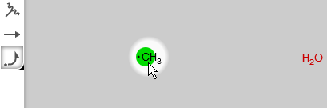You also have the option to click on the source atom in order to enlarge it, and drag the arrow from the enlarged dot:
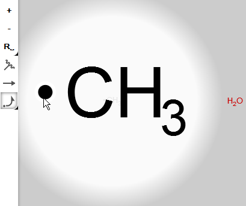While dragging the electron flow arrow to the target atom symbol, you can see a grey feedback of the arrow:
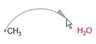If lone pair visibility is turned on, then lone pair electrons can also be the source of either single or double electron flow arrows, such as on the image below:
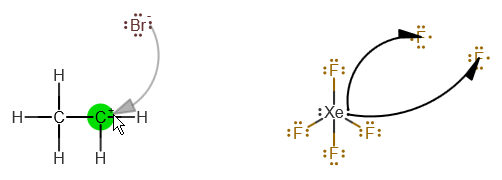As a chemically intelligent editor, Marvin JS does not allow drawing more than one single electron flow arrow per electron (i.e., one single arrow from a radical and no more than two single arrow from a lone pair), as well as no more than one double electron flow arrow per lone pair.
It should be noted that, in this case, a bond can be target of an electron flow arrow only if it is adjacent ot the source atom. Similarly to the the previous point, the source atom has to have explicitly displayed radical or lone pair electrons from which the arrow can be dragged. The endpoint of the arrow will be the midpoint of the target bond.
| 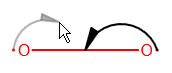 | 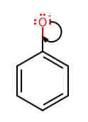 |
Electron flow arrows which start from a bond and target an atom can be used to display the process of blond cleavage. By using single electron flow arrows, homolytic bond cleavage, that is, the splitting of the bonding electron pair can be represented, such as on the image below.
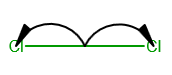While by using double electron flow arrows, you can display heterolytic bond cleavage, where both bonding electrons will belong to the same atom as a result.
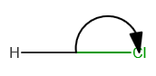Drawing an electron flow arrow from one bond to another is only possible if these two bonds have an atom in common:
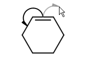Similarly, double electron flow arrows can be used to display, for instance, the relocation of π-bonds:
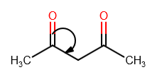Marvin JS uses incipient bonds to represent bonds in the formation. These incipient bonds appear as blue dashed lines on the canvas connecting the two atoms which will have a new bond between them. There are two cases how an incipient bond can occur: the electrons of the new bond either come from atoms or from bonds. In Marvin JS, these bond formations can be described the following ways:
If you want to represent the formation of a bond between two atoms, you have to draw electron flow arrows which start from the respective atoms and target the incipient bond between them.
A mechanism where the electrons come exclusively from one atom can be described by using a double electron flow arrow. In this case, the arrow has to be started from a lone pair of the donor atom and dragged to the acceptor atom. Clicking on this arrow makes the arrow head jump to the incipient bond between the two atoms. A second click on the arrow makes it jump back to its original position (to the target atom).
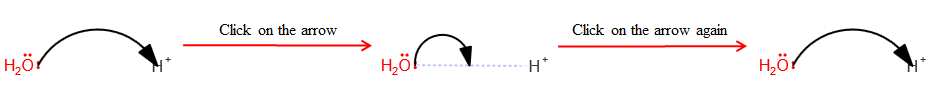When the electrons required for bond formation come partially (or completely, in the case of double electron flow arrows) from an existing bond, then the bond in formation will connect one of the atoms of the original bond to another atom. For describing such a mechanism, you need an electron flow arrow which starts from this existing bond, and the target of which is the incipient bond between the two atoms. See an example below.
When both electrons for the new bond come from the same bond, then we need double electron flow arrows to represent the bond formation process. The steps you have to take for displaying such a mechanism are very similar to the previous case: draw the double electron flow arrows between the appropriate bonds and target atoms, then click once or twice on those arrows you want to end on an incipient bond. The image below summarizes this procedure:
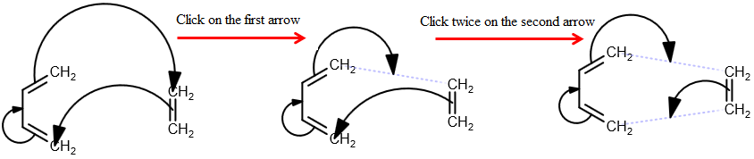